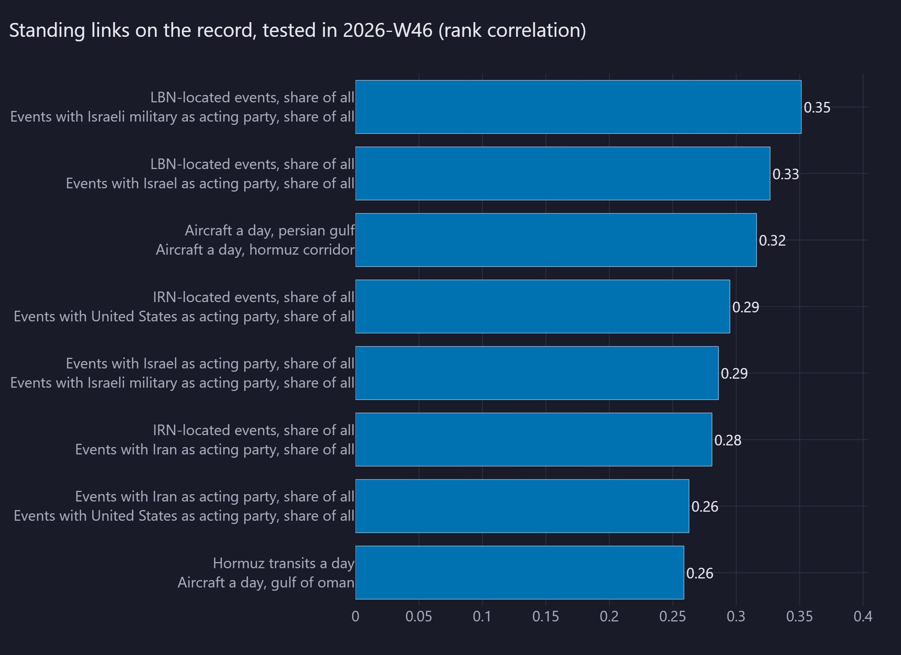

Capabilities and methods
What CIP measures
introduction to the capabilities and the method library
The library in the latest edition
method coverage


Source reliability
what the capability answers and its minimum data window
source reliability figure: held; the full-record audit is refused until its calibration is re-fitted for the 46 sources now in the record (figures/full-record/source_reliability/provenance.json)
Standing links between series
what a standing link is
